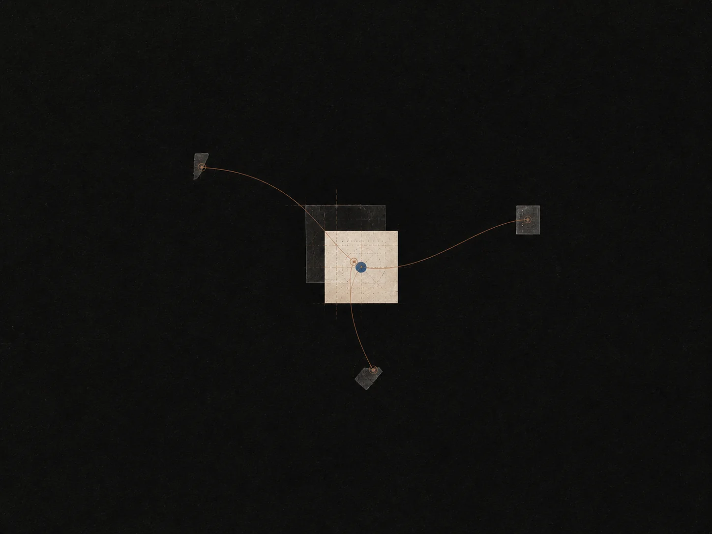

帮助与支持
卡住了？
告诉我们发生了什么、你预期怎样，以及问题出现时的页面或流程。截图和确切步骤能帮我们更快回应。我们在一个工作日内回复。
邮件支持联系
一个 bug、一个合作构想、一笔账单问题，或是你曾试图用 Socrates 理解的东西。我们阅读每一条留言。
教育与研究
合作构想、课堂试点、研究提案。告诉我们，你希望一起弄明白什么。
research@topodrive.top隐私与数据
导出请求、删除请求，或任何关于我们存储内容的疑问。我们在七天内回复每一条隐私请求。
privacy@topodrive.top媒体
采访、产品图片，以及 Socrates 如何构建的背景。我们很乐意聊。
press@topodrive.top一点小建议
你在试图理解什么？你试过什么？对话在哪里变得有用，又在哪里不尽如人意？一点细节，能让我们回问一个更好的问题。
